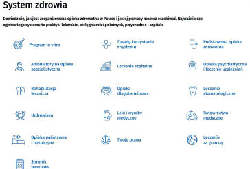

system ochrony zdrowia
NFZ: ▸▸ www.nfz.gov.pl. Są to wiarygodne źródła, które każdy może odwiedzać w celu uzyskania bieżących informacji o zasadach działania systemu ochrony zdrowia, przysługujących uprawnieniach, dostępnych usługach oraz e-narzędziach wspierających pacjenta. Przykładowe kategorie informacji z tych stron przedstawia rycina II.1.1.
ZUS – Zakład Ubezpieczeń Społecznych
KRUS – Kasa Rolniczego Ubezpieczenia Społecznego
Rycina II.1.1.
Organizacja opieki zdrowotnej w Polsce (zrzut ekranu ze strony Ministerstwa Zdrowia i Narodowego Funduszu Zdrowia)
Źródło: Serwis Ministerstwa Zdrowia i Narodowego Funduszu Zdrowia. System zdrowia. pacjent.gov.pl/system-zdrowia. Opublikowano 17.09.2020. Zmodyfikowano 10.09.2024. Dostęp 17.10.2025.
62

1.2.5. Finansowanie ochrony zdrowia
Główne źródło stanowią składki na obowiązkowe ubezpieczenie zdrowotne, które trafiają do NFZ. Składki opłacane są m.in. przez osoby zatrudnione, samozatrudnione, emerytów oraz rolników i pobierane przez ZUS i KRUS. NFZ rozdziela środki między świadczeniodawców, podpisując umowy na realizację świadczeń zdrowotnych.
Podstawowe źródła finansowania systemu zdrowia: